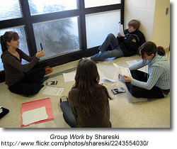

Information Literacy: A Definition
Information literacy or life long abilities, behaviors and attitudes.
A New Information Environment

The Traditional Definition: Still Relevant?
The Association of Colleges and Libraries (2006) defines an information literate citizen as one who is “able to recognize when information is needed and has the ability to locate, evaluate and use effectively the needed information”.
Within recent years the way that we access information and the tools that we use to process information has changed dramatically. Students no longer need to rely on teachers, textbooks and libraries to access the information they need to make decisions or complete assignments. They live in a world of immediate communication where they can find the answers to the questions that intrigue them. As well, the read/write web, also known as Web 2.0, where individuals have the opportunity to be not merely consumers of information but also producers requires educators to reevaluate the skills that students need to be successful learners and ultimately contributing citizens. The slide presentation below is an excellent introduction to how the new read/write web is changing the tools and the skills students require to find, use and share information in the 21st Century.

Writers, thinkers and educators are attempting to respond to this new information environment by asking the question, "in a world radically changed by new and emerging technology what are the skills that will allow our students to find, retrieve, analyze, and use information?"
Will Richardson (Web-logged) challenged readers to list what our kid's futures will require them to be. A cohort collected the many responses to his question. The list is an ideal way to begin to review the skills that our students require for success in the 21st Century and to begin to craft a new definition of information literacy.
New Definitions
Doug Johnson in his post, Life Long Behaviors, Abilities and Attitudes says,
Call them what you will - dispositions, habits of mind , conceptual skills , life-long learning behaviors, high EQ traits - the educational spotlight is turning to abilities that are incredibly important and very tough to quantify. You can hardly turn around without bumping into a set of these things:
New theories of learning such as Connectivism, and revisions of information literacy models, skills and standards including Big 6 , WebQuests, Bloom’s Taxonomy , National Educational Technology Standards (NETS), The Partnership for 21st Century Life and Career Skills and the American Association for School Libraries’ (AASL) Standards for the 21st Century Learner , express the new literacies – the basic foundations that are essential for success in what Thomas Friedman (2005) has called the flat world and Daniel Pink (2006) has coined the conceptual age.
And in February 2008, the NCTE adopted the statement, Towards a Definition of 21st- Century Literacies , which includes the following"
Twenty-first century readers and writers need to
- Develop proficiency with the tools of technology
- Build relationships with others to pose and solve problems collaboratively and
cross-culturally - Design and share information for global communities to meet a variety of
purposes - Manage, analyze and synthesize multiple streams of simultaneous
information - Create, critique, analyze, and evaluate multi-media texts
Attend to the ethical responsibilities required by these complex environments
The links below explore each of these new theories, models and revisions of models in more detail. An understanding of how information literacy is constantly changing and evolving is essential for beginning the process of constructing a school-wide information literacy program.

Contact Information
Donna DesRoches
Learning Resources Consultant
Living Sky School Division
509 Pioneer Avenue
North Battleford, SK
S9A 4A5
306-937-7904
_________________________